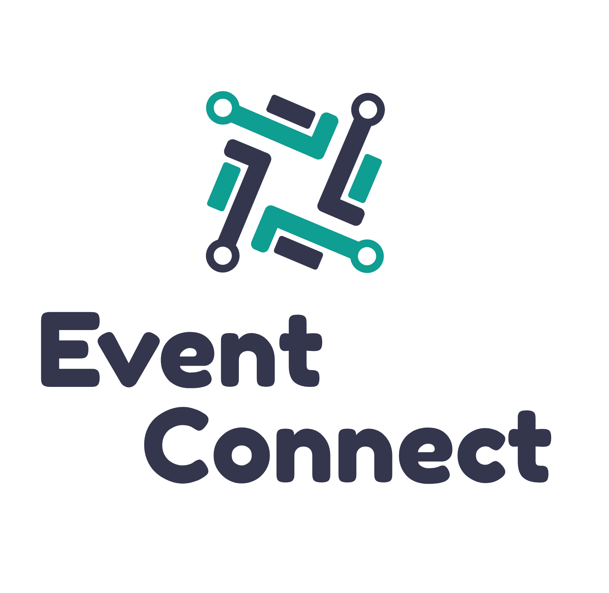
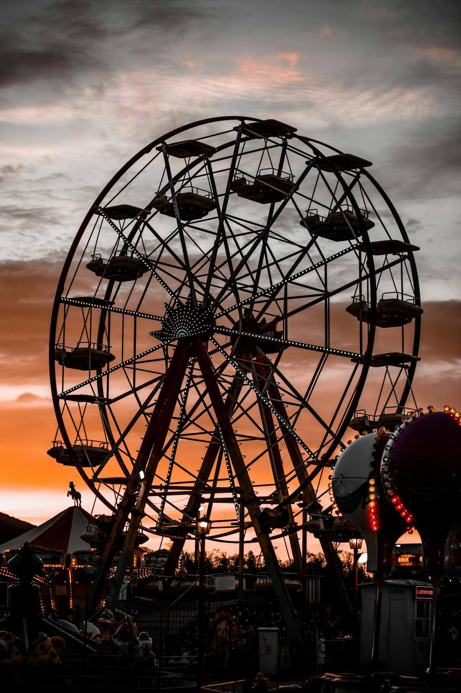
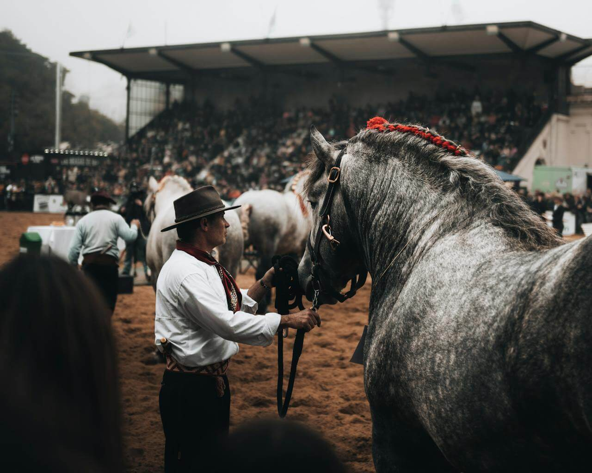
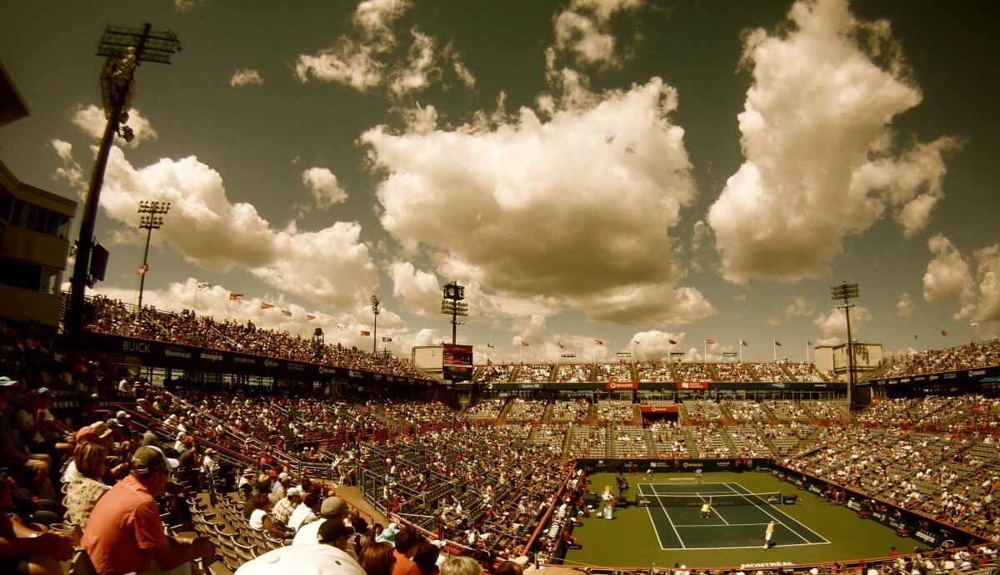

Overview
Purpose
Designed to simplify the process of discovering and organizing local activities and events through a comprehensive, user-friendly platform.
Audience
For the social butterflies, the adventure seekers, or travelers exploring new places.
Branding
Website Logo
Style Guide
Color Palette
| Primary | Secondary | Accent 1 | Accent 2 |
|---|---|---|---|
Typography
Heading Font: TaHoma
Paragraph Font: Verdana
Why people will come to EventConnect?
The value proposition presented on the platform can be found through convenience, simplicity, and accessibility. People are typically overwhelmed or underinformed jumping between platforms and calendars to keep up with what's happening around them. Events and activities can be readily found through a tailored experience based on users' interests and preferences.
What expectations or questions visitors will have answered at this site?
EventConnect can answer questions like what types of events the platform covers, how events can be searched, how can visitors sign up for RSVP'ing for events, and how can visitors track or manage events they are interested in. Ultimately, the list of questions can be broken down categorically as follows: finding events, creating events, and personalizing the experience. These type of questions can be simply answered by the site.
Why EventConnect over other sites?
The primary reason why visitors will come to EventConnect instead of another site is EventConnect behaves as a one-stop platform for a wide variety of events and provides a streamlined user-friendly interface. Events and activities can be found through personalized recommendations or location-based discovery. This allows the platform to completely cater to the desires of the user. It provides a seamless event management and registration process as well as social features for group coordination. It encourages and emphasizes community engagement and curation. This site offers comprehensive search and filter options as well as real-time event updates.
Navigation
Site Map
Content
Home page
The value proposition presented on the platform can be found through convenience, simplicity, and accessibility. People are typically overwhelmed or underinformed jumping between platforms and calendars to keep up with what's happening around them. Events and activities can be readily found through a tailored experience based on users' interests and preferences.
Images for the Home page
  Search page
EventConnect can answer questions like what types of events the platform covers, how events can be searched, how can visitors sign up for RSVP'ing for events, and how can visitors track or manage events they are interested in. Ultimately, the list of questions can be broken down categorically as follows: finding events, creating events, and personalizing the experience. These type of questions can be simply answered by the site.
Images for the Page 2
Personalized
The primary reason why visitors will come to EventConnect instead of another site is EventConnect behaves as a one-stop platform for a wide variety of events and provides a streamlined user-friendly interface. Events and activities can be found through personalized recommendations or location-based discovery. This allows the platform to completely cater to the desires of the user. It provides a seamless event management and registration process as well as social features for group coordination. It encourages and emphasizes community engagement and curation. This site offers comprehensive search and filter options as well as real-time event updates.
Images for the Page 3
Wireframes
Create three wireframes for your site. One for each page and list them here
Home
A simple introduction page.
Events
Simply lists events and contains a toolbar for filtering and sorting.
Account Page
Displays upcoming registered events as well as event creation tools.